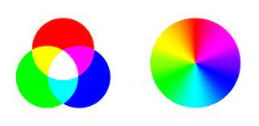
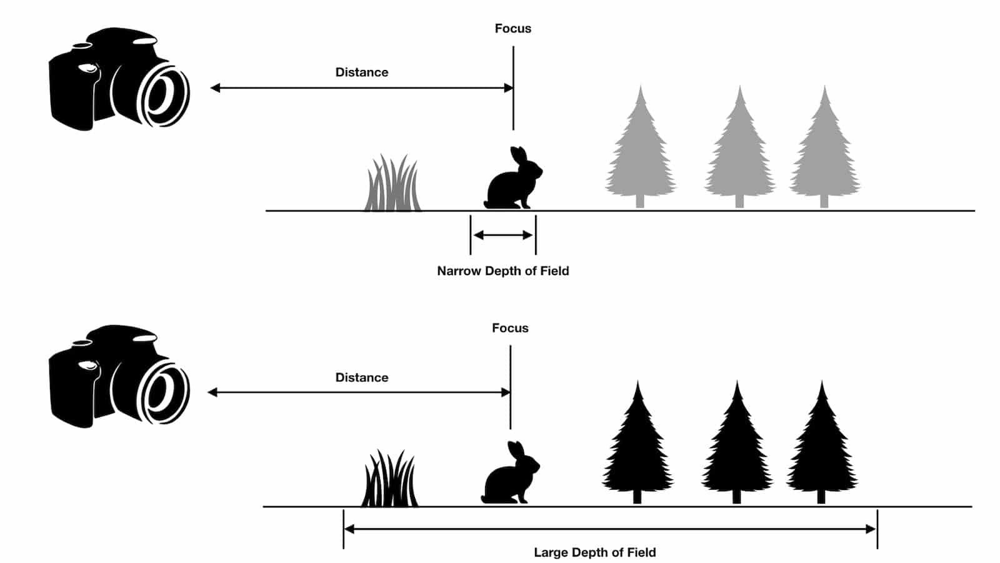
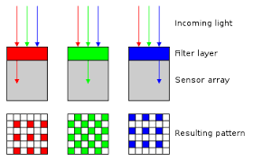
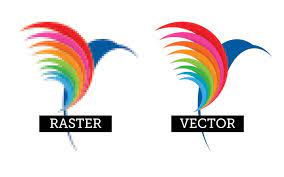

Back to Page 1
Color Vision: RODS and CONES and RGB
Rods are sensitive to amount of light we see and cones help us see color.

Different types of cones are more sensitive to different colors: Red, Green and Blue.
RGB: the standard color model for screens and inkjet printing, each pixel in a RGB image has 3 channels/values: red,green and blue.
Sampling & Quantization
1. Sampling: there are millions of small light sensors in a camera sensor each samples the light.
sampling rate : the number of sensors , higher sampling rate means more accurate detailed images.
2. Quantization: a value is assigned to each sample.
Bit Depth: number of bits used for each sample, bigger bit depth means more possible colors
Image Sensor: does the sampling and quantizing of an image.
A bayer matrix filters the light so each individual light sensor receives red,green or blue light.
Pixels - are the basic unit for raster images and digital displays.
Image Size - total number of pixels in an image known as the image size.
Image Resolution - number of pixels packed into a linearr inch or millimeter.
Display Resolution - number of pixels represented on it.
VECTOR VS RASTER
Two categories of digital images
Vector Image:
Raster Image:
 Links & Resources:
Links & Resources:
Next Page 3